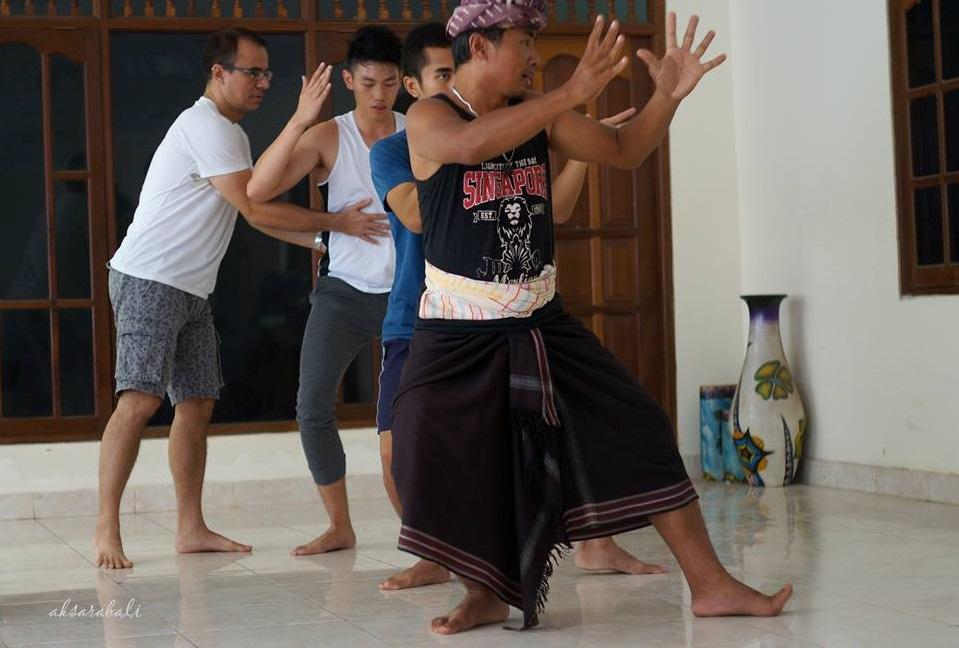
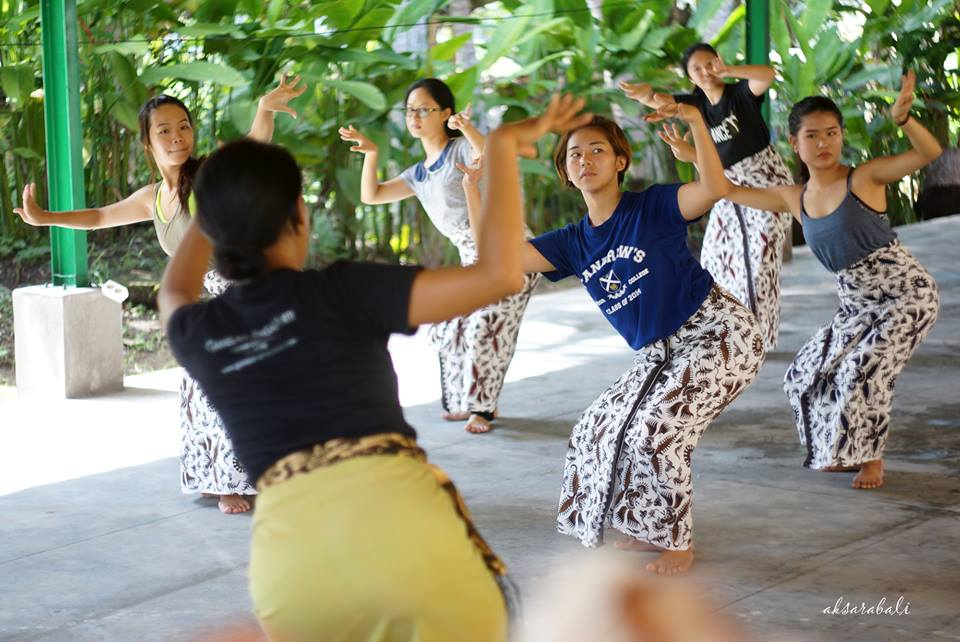
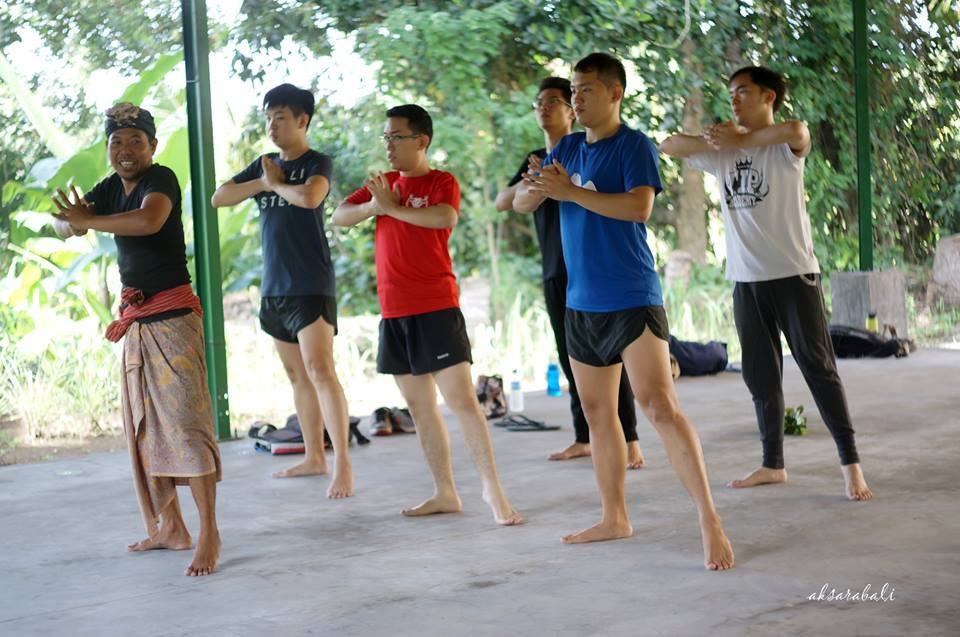
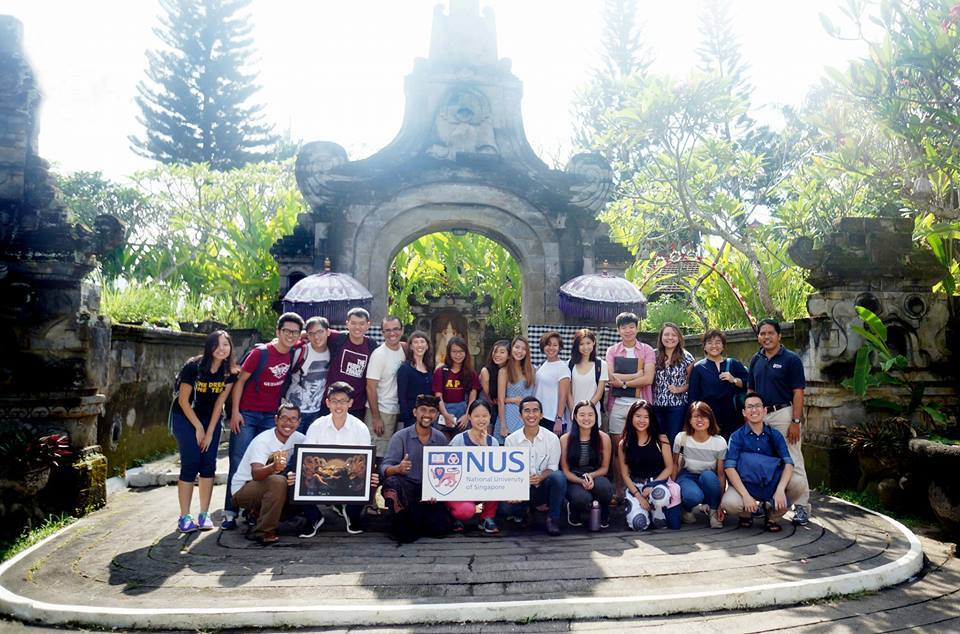

This module has changed the way I look at art and Balinese dance in particular. Now I can appreciate the music, the movement and the whole meaning behind why some people are really passionate about art.
Since young I was not particularly interested in any form of traditional Balinese art. Even though my mother and sister were Balinese dancers, I don’t inherit their talent for dancing. I remember the time when my mother brought me to a Balinese dance performance and I ended up running away from the show. From that moment I think my mother gave up trying to expose me to other forms of Balinese art. I was simply not interested.

Interestingly, things started to change after I spend several years in Singapore. Maybe partly because when people ask me whether I can do Balinese dance, my answer would be no. Shame on me! Haha. Initially I didn’t bother. After a while I started to feel something is not right about this. Then in semester 7 in NUS I finally took this module and it opened my eyes. I started to see and appreciate the beauty of Balinese art, especially the dance. Dance is not merely about the movements. It teaches us discipline, hardwork and respect to our teachers.
Before taking this module, I did not understand why some people choose to pursue arts as their passion. Now I have better understanding. Arts promotes imagination and creativity. I feel more excited after dancing. I feel more energized. I feel more alive. I believe that we are not meant to do mundane, repetitive jobs. We are not robots. Maybe art is the one that makes us more human.


All in all, this module helped me to reinvent my identity as a Balinese. I am thankful and extremely proud of the rich culture that we have. If you are interested to experience what I am trying to describe here, take this module! Please note that the one week trip to Bali during the recess week is compulsory. To me, it was the trip that makes this module different from other modules that I took. The best way to experience the Balinese culture is to really go there and talk to the people and learn from them! Have fun :)
